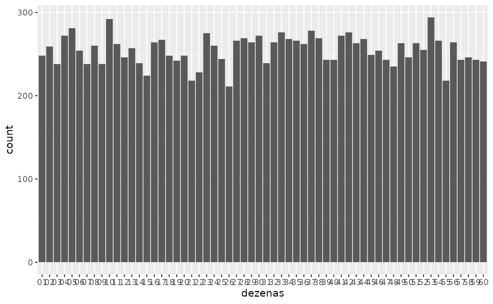

megasena.Rmd
library(est031)
library(tidyverse)
library(lubridate)
library(plotly)
library(scales)
ganhadores <- download_megasena("ganhadores")
glimpse(ganhadores)
#> Rows: 7,650
#> Columns: 6
#> $ data <date> 1996-03-11, 1996-03-11, 1996-03-11, 1996-03-18, 1996-03-18…
#> $ concurso <int> 1, 1, 1, 2, 2, 2, 3, 3, 3, 4, 4, 4, 5, 5, 5, 6, 6, 6, 7, 7,…
#> $ acumula <chr> "sim", "sim", "sim", "não", "não", "não", "não", "não", "nã…
#> $ acertos <chr> "sena", "quina", "quadra", "sena", "quina", "quadra", "sena…
#> $ ganhadores <int> 0, 17, 2016, 1, 65, 4488, 2, 62, 4261, 0, 39, 3311, 0, 98, …
#> $ premio <dbl> 0.00, 39158.92, 330.21, 2307162.23, 14424.02, 208.91, 39119…
ganhadores %>%
group_by(acertos) %>%
summarise(
ganhadores = mean(ganhadores),
premio = mean(premio)
)
#> # A tibble: 3 × 3
#> acertos ganhadores premio
#> <chr> <dbl> <dbl>
#> 1 quadra 7213. 475.
#> 2 quina 112. 27198.
#> 3 sena 0.343 5254359.
sena <- ganhadores %>%
filter(acertos == "sena") %>%
select(acumula)
fct_count(sena$acumula, prop = TRUE)
#> # A tibble: 2 × 3
#> f n p
#> <fct> <int> <dbl>
#> 1 não 579 0.227
#> 2 sim 1971 0.773
sena <- ganhadores %>%
filter(acertos == "sena")
sena %>%
arrange(desc(ganhadores)) %>%
head(n=10)
#> # A tibble: 10 × 6
#> data concurso acumula acertos ganhadores premio
#> <date> <int> <chr> <chr> <int> <dbl>
#> 1 2018-12-31 2110 não sena 52 5818007.
#> 2 2017-12-31 2000 não sena 17 18042279.
#> 3 2004-01-14 529 não sena 15 348733.
#> 4 2010-09-04 1211 não sena 7 13217565.
#> 5 2015-12-31 1775 não sena 6 41088919.
#> 6 2016-12-31 1890 não sena 6 36824758.
#> 7 2000-08-19 233 não sena 5 3196547.
#> 8 2011-12-31 1350 não sena 5 35523498.
#> 9 2021-11-10 2427 não sena 5 18181413.
#> 10 2000-04-22 216 não sena 4 801058.
datas <- as_date(paste0(1996:2022, "-12-31"))
datas
#> [1] "1996-12-31" "1997-12-31" "1998-12-31" "1999-12-31" "2000-12-31"
#> [6] "2001-12-31" "2002-12-31" "2003-12-31" "2004-12-31" "2005-12-31"
#> [11] "2006-12-31" "2007-12-31" "2008-12-31" "2009-12-31" "2010-12-31"
#> [16] "2011-12-31" "2012-12-31" "2013-12-31" "2014-12-31" "2015-12-31"
#> [21] "2016-12-31" "2017-12-31" "2018-12-31" "2019-12-31" "2020-12-31"
#> [26] "2021-12-31" "2022-12-31"
virada <- sena %>%
filter(data %in% datas) %>%
mutate(
ano = year(data)
)
p1 <- ggplot(virada, aes(x = ano, y = ganhadores)) +
geom_point() +
geom_path() +
labs(x = "ano", y = "número de ganhadores")
ggplotly(p1)
library(est031)
library(tidyverse)
library(lubridate)
library(plotly)
dezenas <- download_megasena("dezenas")
glimpse(dezenas)
#> Rows: 15,294
#> Columns: 4
#> $ data <date> 1996-03-11, 1996-03-11, 1996-03-11, 1996-03-11, 1996-03-11, …
#> $ concurso <int> 1, 1, 1, 1, 1, 1, 2, 2, 2, 2, 2, 2, 3, 3, 3, 3, 3, 3, 4, 4, 4…
#> $ acumula <chr> "sim", "sim", "sim", "sim", "sim", "sim", "não", "não", "não"…
#> $ dezenas <fct> 04, 05, 30, 33, 41, 52, 09, 37, 39, 41, 43, 49, 10, 11, 29, 3…
fct_count(dezenas$dezenas, prop = TRUE) %>%
arrange(desc(n))
#> # A tibble: 60 × 3
#> f n p
#> <fct> <int> <dbl>
#> 1 53 294 0.0192
#> 2 10 292 0.0191
#> 3 05 281 0.0184
#> 4 37 278 0.0182
#> 5 33 276 0.0180
#> 6 42 276 0.0180
#> 7 23 275 0.0180
#> 8 04 272 0.0178
#> 9 30 272 0.0178
#> 10 41 272 0.0178
#> # … with 50 more rows
ggplot(dezenas, aes(x=dezenas)) +
geom_bar()